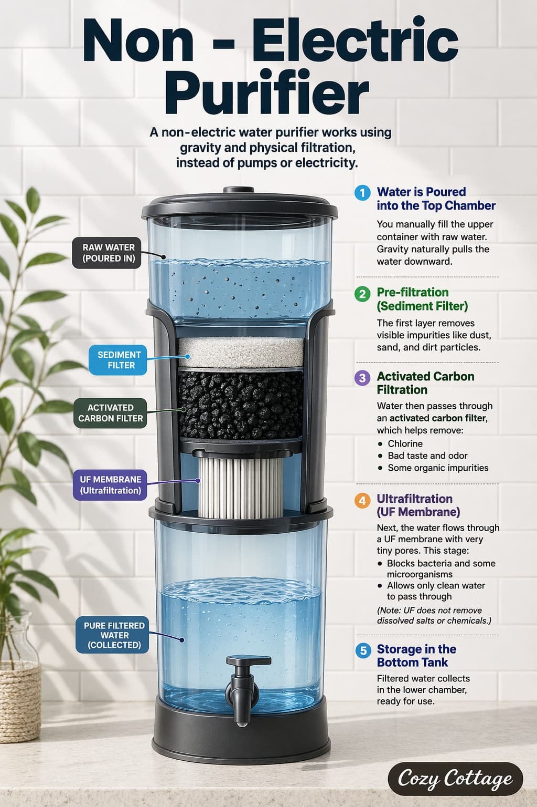

If your water has been tested and is already free from most harmful substances, you may not necessarily need a full-scale electric purifier. However, if you still prefer an added layer of iltration, you can consider options like non-electric purifiers or water softeners.
Non-electric purifiers are a sustainable choice because they do not require electricity, so you"can access filtered water at any time. They are also generally easy to install, simple to maintain
How does a Non-Electric Purifier work?

A non-electric water purifier works using gravity and physical filtration, instead of pumps or electricity. Here’s the process in simple steps:
1. Water is poured into the top chamber
You manually fill the upper container with raw water. Gravity naturally pulls the water downward.
2. Pre-filtration (sediment filter)
The first layer removes visible impurities like dust, sand, and dirt particles.
3. Activated carbon filtration
Water then passes through an activated carbon filter, which helps remove:
• Chlorine
• Bad taste and odor
• Some organic impurities
4. Ultrafiltration (UF membrane)
Next, the water flows through a UF membrane with very tiny pores. This stage:
• Blocks bacteria and some microorganisms
• Allows only clean water to pass through
(Note: UF does not remove dissolved salts or chemicals.)
5. Storage in the bottom tank
Filtered water collects in the lower chamber, ready for use.
Advantages of a Non - Electric Purifier
• No electricity required – works anytime
• Cost-effective (lower initial and running cost)
• Easy to install (no complex setup)
• Low maintenance and simple cleaning
• Cannot remove dissolved salts (TDS)
• Portable and lightweight
• Eco-friendly and energy-saving
• Ideal for areas with frequent power cuts
Limitations of Non - Electric Purifier
• Not suitable for highly contaminated water
• Slower filtration compared to electric purifiers
• Limited purification technologies (mostly UF, carbon)
• Does not remove heavy metals effectively
• May not kill all microorganisms in highly polluted water
Disclaimer: As an Amazon Associate, I earn from qualifying purchases.
These are the few non Electric purifiers that I found -
1. RAMA Gravity Water Filter
Visit Amazon
Product Rating: ★★★★☆
(4.0)
Price: ₹5939
Capacity: 17Litre
Storage : 8Litre
Installation : Counter Top
Material : Stainless Steel
Warranty : 10 year
It also comes with larger capacities. Its expensive when it comes to other brands but has a higher flow rate which is an advantage over rest of the purifiers
2. iSpring 20 L Gravity Water Purifier
Visit Amazon
Product Rating: ★★★★★
(4.8)
Price: ₹1969
Capacity : 20Litre
Installation : Counter Top
Warranty : 2 Year
It is UF technology based Non-Electric Purifier.
3. OZAT PURE WATER 4-Stage Non-Electric Water Purifier
Visit Amazon
Product Rating: ★★★★☆
(4.0)
Price: ₹2099
Installation type : Under sink & Wall Mounted
Flow Rate : 25 Litre per hour
It comes with tools for installation.
4. BRITA Flow XXL Water Filter Tank (8.2L)
Visit Amazon
Product Rating: ★★★★★
(4.6)
Price: ₹4749
Capacity : 8.2 Litre
Storage : 5.2 Litre
Installation : Fridge shelf or Countertops
It has only one Cartridge with Digital Lifetime Indicator measures time to remind on filter exchange
5. Pureit Germkill Kit for Classic Water Purifier
Visit Amazon
Product Rating: ★★★★☆
(4.2)
Price: ₹1130
Capacity : Total 3000 Litres
Warranty : 2 year warranty
Cheapest among all.
6. BRITA Marella XL German Design Water Filter Jug (3.5 L)
Visit Amazon
Product Rating: ★★★★☆
(4.2)
Price: ₹2369
Installation :Countertop
Material : Plastic Portable Jug
Capacity : 3.5 Litres
Storage : 2 Litres
Powerful Filtration with MicroFlow Technology